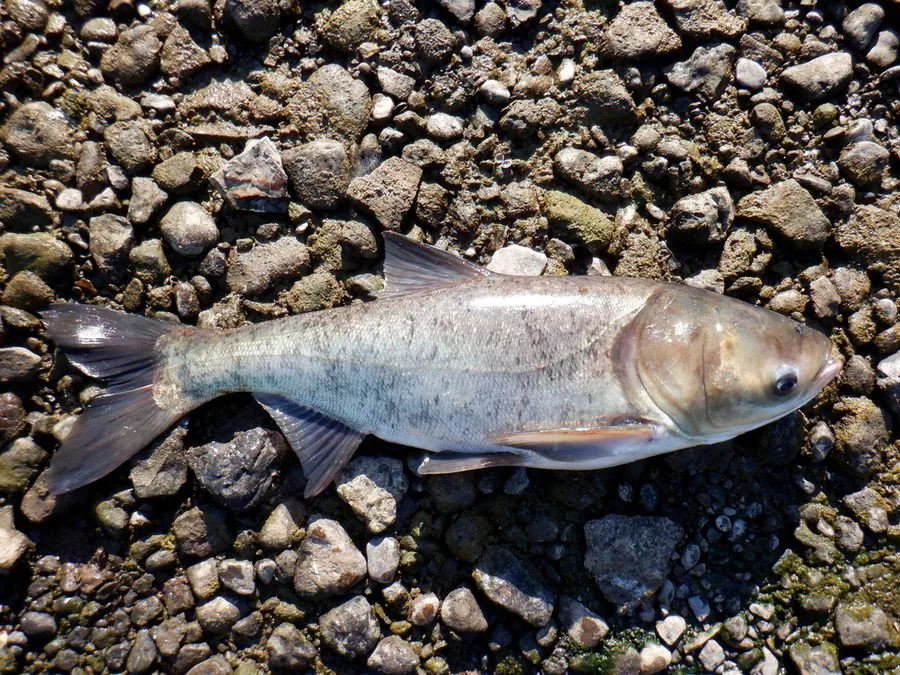

鱼类 · 动物界
鳙鱼 Hypophthalmichthys nobilis

中国“四大家鱼”之一，头大而宽、体侧有黑色斑点，以浮游动物为主食，俗称“胖头鱼”，鱼头常用于制作剁椒鱼头。
- 分类
- 门脊索动物门纲硬骨鱼纲目鲤形目科鲤科属鲢属
- 栖息环境
- 江河、湖泊和水库的中上层水域，喜浮游动物丰富、水流平缓的水体
- 地理分布
- 原产中国长江、珠江、黄河、黑龙江等水系，多国引种养殖
- 保护级别
- 暂无评估；中国未列入国家重点保护野生动物名录（四大家鱼之一）
物种志
鳙鱼体侧扁而较高，最显著的特征是头特别大而宽，约占体长的三分之一；眼睛小且位于头侧中轴以下，口宽大、端位，无须。体色灰黑，体侧密布不规则的黑色斑点，因此有“花鲢”之称。成鱼体长一般 60–100 cm，体重 3–15 kg，最大个体可超过 30 kg。
鳙鱼是滤食性鱼类，主食枝角类、桡足类等浮游动物，也滤食浮游植物和有机碎屑，靠鳃耙过滤水体中的食物。它性情温和、行动较迟缓，多在水体中上层活动。一般 5–6 龄性成熟，繁殖期在 5–7 月，同样需要江河涨水的刺激，卵为漂流性。鳙鱼原产中国长江、珠江、黄河、黑龙江等水系，是四大家鱼中头部最肥美的一种，鱼头常被用来制作剁椒鱼头等菜肴；它已被引入多个国家，在北美部分水域成为入侵物种。目前它没有IUCN 的正式评估，中国未将其列入国家重点保护野生动物名录。
形态与习性
- 食性主食浮游动物，也滤食浮游植物和有机碎屑
- 体长一般 60–100 cm，最大可超过 1.2 m
- 体重常见 3–15 kg，最大可超过 30 kg
- 繁殖5–6 龄性成熟，5–7 月产卵，需涨水刺激
- 头部头部约占体长的三分之一，是鱼头菜肴的主要原料
- 习性性情温和，多在水体中上层活动
趣味知识
- 鳙鱼的头部特别肥厚，占身体的比例在淡水鱼中数一数二，因此被称为“胖头鱼”。
- 它和鲢鱼一样靠鳃耙滤食，但主食浮游动物，与鲢鱼形成食性上的分工。
- 剁椒鱼头、千岛湖鱼头等名菜多以鳙鱼为原料。